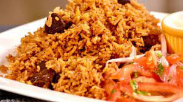

Pilau

In Kenya, pilau is prepared for special occasions such as weddings and for visitors. It is considered a celebration meal and is served with kachumbari.
Ingredients
- ¼ cup vegetable oil(60 mL)
- 2 medium red onions, thinly sliced
- 4 cloves garlic, minced
- 2 tablespoons ginger, minced
- 1 serrano chile, finely chopped
- 1 tablespoon pilau masala
- 2 beef stock cubes
- 1 cinnamon stick
- ¼ cup fresh cilantro(10 g), roughly chopped
- 1 lb beef sirloin(455 g), cubed
- 3 roma tomatoes, diced
- 1 lb potato(455 g), waxy, peeled and cut into 1 inch (2 cm) chunks
- 4 cups water(960 mL)
- 2 cups basmati rice(400 g)
Method
- oast and blend the pilau masala: In a medium saucepan over medium heat.
- Brown the onions by frying it in oil until it caramelizes. This should take about 10 to 15 minutes. Stir in the Garlic, ginger and serrano pepper.
- Add the meat stock cubes, pilau masala, cilantro, bay leaves, and salt to taste and brown the meat for about
- Stir in the tomatoes and cook till it dissolves. Then stir in the potatoes.
- Add water and bring everything to a rolling boil and leave the potatoes to cook for about 10 minutes.
- Stir in the rice then cover tightly. You can use an aluminum foil to cover it first, this will help keep the steam in. Then place the lid over it and leave to cook on a low heat for 20 minutes until the liquid has been absorbed.
- Serve hot! You can sprinkle the rice pilaf with some chopped cilantro, then fluff with a fork. Enjoy.